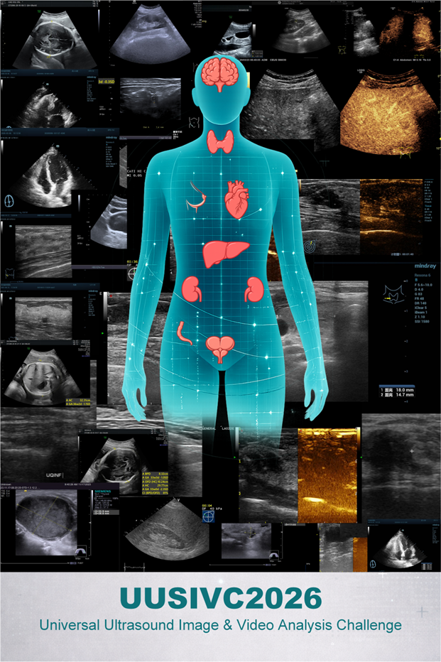
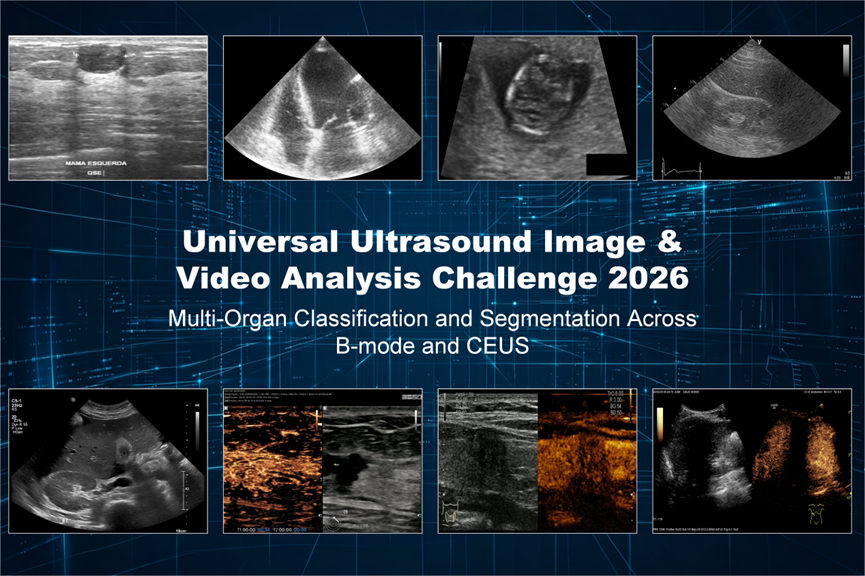

The Universal Ultrasound Image & Video Analysis Challenge 2026 (UUSIVC 2026) is an international academic competition focused on multi-organ and multi-modal ultrasound intelligence. It is officially authorized by MICCAI 2026 and will be held as a key component of Deep-Brea3th 2026.

1. Challenge Overview
The challenge is open to researchers and industry professionals in medical imaging, artificial intelligence, ultrasound medicine, computer vision, biomedical engineering, and related fields. It aims to bring together interdisciplinary teams to address key problems in multi-organ ultrasound image and video analysis while promoting deeper integration among research, technical validation, and clinical application.
UUSIVC 2026 focuses on multi-organ, multi-modal ultrasound image and video analysis and seeks to establish a unified and publicly accessible benchmark. It systematically evaluates method accuracy and efficiency in classification and segmentation, while exploring whether one modeling paradigm can learn transferable and robust shared representations across organs, modalities, and tasks.
To better reflect clinical complexity, the challenge introduces B-mode images, ultrasound videos, and CEUS data, encouraging joint modeling of spatial structures, temporal dynamics, and enhancement patterns. The final objective is to improve generalization, clinical applicability, and real-world deployability of intelligent ultrasound methods.
It is jointly organized by Macao Polytechnic University, the Netherlands Cancer Institute, Zhejiang Cancer Hospital, Hangzhou First People’s Hospital, Radboud University, the University of Pittsburgh, Shenzhen University, Terminus Group, and other institutions.
2. Motivation and Clinical Value
The value of ultrasound imaging lies not only in “seeing,” but in extracting stable and reliable clinical information from complex, dynamic, and heterogeneous data. In real clinical settings where multiple organs, modalities, and tasks coexist, the key question is whether AI can move beyond single-organ and single-modality limits to deliver stronger generalization and practical value.
3. Real-World Challenges
Clinical ultrasound workflows are inherently diverse, involving static images, dynamic videos, and CEUS data simultaneously. However, most existing studies and evaluation systems remain limited to specific organs or a single modality, constraining stability, scalability, and cross-task adaptability.
UUSIVC 2026 addresses this through a unified framework covering B-mode images, ultrasound videos, and CEUS, and by integrating public datasets with multicenter heterogeneous hospital data. The challenge includes more than ten evaluation tasks centered on multi-organ classification and segmentation, enabling more realistic and systematic assessment.
4. Multi-Organ and Multi-Modal Data System
UUSIVC 2026 builds a comprehensive data system across B-mode ultrasound images, ultrasound videos, and CEUS videos, combining public datasets and collaborating-hospital data for evaluation closer to clinical practice.

Data Scale and Task Coverage
- Public data: 6,740 ultrasound images and 500 cardiac video cases.
- Collaborating hospitals: 5,262 ultrasound images, around 800 CEUS cases, and more than 200 cardiac video cases.
Multi-Organ Coverage
- B-mode covers eight organs: breast, thyroid, liver, kidney, fetal head, heart, appendix, and prostate.
- CEUS covers four organs: breast, thyroid, liver, and prostate.
- Echocardiographic videos are included for structural segmentation evaluation.
Multi-Modality and Dynamic Information
Beyond static B-mode images, the challenge includes ultrasound videos and CEUS videos. Participating models therefore need to understand anatomical structures and lesion boundaries while handling temporal evolution and enhancement-phase perfusion characteristics.
Multicenter Heterogeneous Real-World Data
Hospital data originate from multiple institutions and equipment platforms, providing strong heterogeneity and clinical representativeness. This makes the benchmark suitable not only for ideal-condition performance comparison but also for evaluating stability and adaptability in real clinical environments.
5. Evaluation Mechanism and Ranking Strategy
UUSIVC 2026 evaluates submissions from four dimensions: segmentation performance, classification performance, runtime efficiency, and resource consumption.
Segmentation Evaluation
Segmentation tasks are scored using DSC (Dice Similarity Coefficient) and NSD (Normalized Surface Dice), assessing overlap quality and boundary-level agreement under tolerance constraints.
Classification Evaluation
Classification tasks are scored using ACC (Accuracy) and AUC (Area Under the Curve), measuring overall correctness and discriminative ability across thresholds.
Efficiency Evaluation
Inference time and peak GPU memory usage are recorded, normalized, and combined into an efficiency score to reflect practical deployment cost.
Overall Ranking
Final ranking combines performance and efficiency. The challenge also provides segmentation, classification, and organ-specific sub-leaderboards for transparent, fine-grained comparison.
6. Challenge Timeline
- Early April 2026: Official launch of the challenge website.
- By July 20, 2026: Registration opens; training and validation sets are released.
- August 20, 2026: Validation set submission opens.
- September 1, 2026: Test set submission opens.
- September 15, 2026: Deadline for registration and Docker submission.
- October 4–8, 2026: Final results announced during MICCAI 2026.